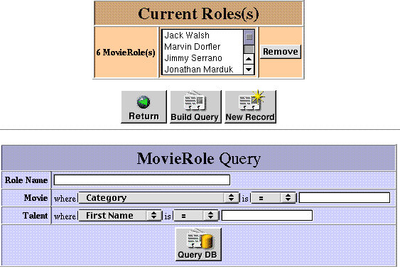
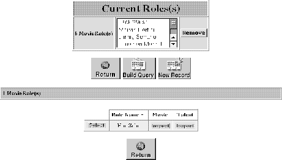

PATH
WebObjects 4.0 Documentation >
WebObjects Tools and Techniques
 Table of Contents
Table of Contents  Previous Section
Previous Section
Edit-Relationship Pages
An edit-relationship page allows users to add records to a relationship and remove records from the relationship. Users typically come to these pages when they click an Edit button next to a relationship in an edit page. Edit-relationship pages consist of three separate components, of which two are shown at any one time. The first component is a browser that lists the to-many relationships of a particular property and contains several controls. In addition to the browser, a query component initially appears for locating another object to link to for that property.

This user interface facilitates the following tasks:
When a query is executed (assuming matching records are found) a select component replaces the query component.

To add a listed record to the to-many relationship, click the Select button. To construct a new query, click the Build Query button.
When you have finished editing a to-many relationship, click the Return button under the browser to return to the original edit page. You must click the Save button in this page to store the changed relationship in the database.
Table of Contents  Next Section
Next Section